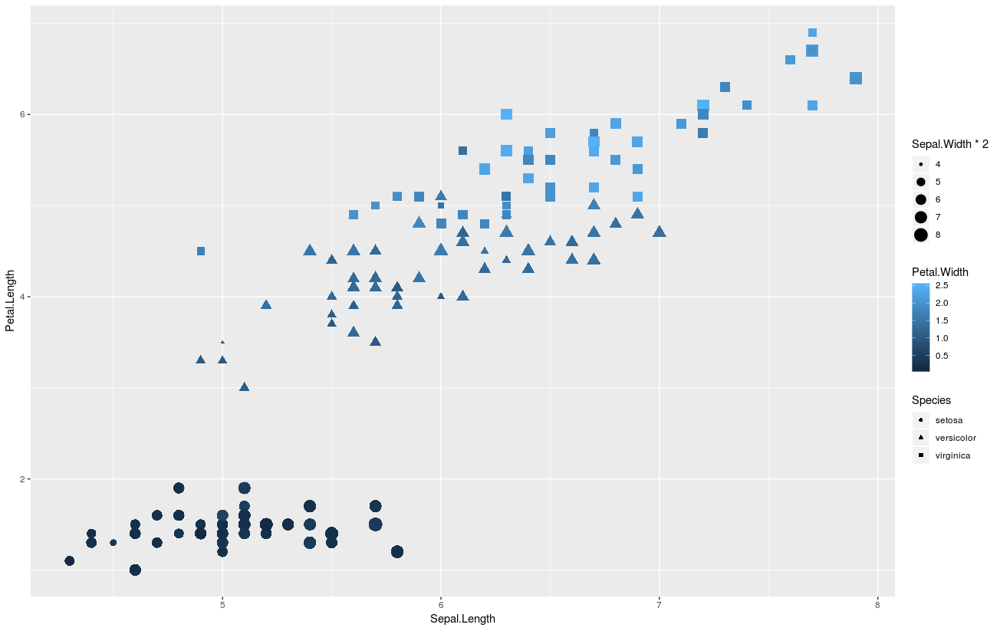

University of Heidelberg
R/LinkedCharts: A novel approach for simple but powerful interactive data analysis
Explore your data
RNA-Seq data, 57 samples, 8000 out of ~60000 genes.
With just few lines of code
openPage(useViewer = FALSE, layout = "table1x2")lc_heatmap(dat(value = corrMat,showLegend = FALSE,on_click = function(k) { # \sampleX <<- k[1] # | Linking thesampleY <<- k[2] # | chartsupdateCharts( "A2" ) # /}),place = "A1")sampleX <- "PG004-N"sampleY <- "PG004-D"lc_scatter(dat(x = log10( 1 + countMatrix[,sampleX] ),y = log10( 1 + countMatrix[,sampleY] ),size = .3,opacity = .3),place = "A2")lc_colourSlider(chart = "A1", place = "A1", id="cs")
It's simple!
-
 ggplot(iris) + geom_point(aes(x = Sepal.Length, y = Petal.Length,size = Sepal.Width * 2, colour = Petal.Width, shape = Species)) -
lc_scatter(dat(x = iris$Sepal.Length, y = iris$Petal.Length,size = iris$Sepal.Width * 2, colourValue = iris$Petal.Width,symbolValue = iris$Species))
How does it work?
on_click = function(i) {# put here your R code. For example:selPoint <<- i # change some global variableupdateCharts()}
Customizable events:
- on_click: a point/cell/line/bar is clicked.
- on_mouseover: mouse moves over a point/cell/line/bar.
- on_mouseout: mouse moves out of a point/cell/line/bar.
- on_marked: some points/cells/lines/bars are selected or deselected.
- on_labelClickRow: a row label of a heatmap is clicked.
- on_labelClickCol: a column label of a heatmap is clicked.
And another example!
MA Plot Expression
log2-fold changes of 58037 genes 19 patients, normal and tumor tissues
openPage(useViewer = FALSE, layout="table1x2")gene <- 1lc_scatter(dat(x = voomResult$AveExpr,y = voomResult$tissuetumour,color = ifelse( voomResult$adj.P.Val < 0.1, "red", "black" ),label = rownames(voomResult),size = 1.3,on_click = function(k) { gene <<- k; updateCharts("A2") }),"A1")countsums <- colSums(countMatrix)lc_scatter(dat(x = sampleTable$patient,y = countMatrix[gene,] / countsums * 1e6 + .1,logScaleY = 10,colorValue = sampleTable$tissue,title = rownames(countMatrix)[gene],axisTitleY = "counts per million (CPM)",ticksRotateX = 45),"A2")
Maybe something more complicated?
Stoeckius et al. Nature Methods, 14:865, 2017
You can find tutorial for this example here
Online tutorials

Share your data
Or send scripts to your colleagues
Thank you for your attention!
Try it now:
devtools::install_github( "anders-biostat/JsRCom" )
devtools::install_github( "anders-biostat/rlc" )
This presentation is available at:
kloivenn.github.io/Bioconductor2018
Tutorial available at:
anders-biostat.github.io/linked-charts
Anders group is hiring